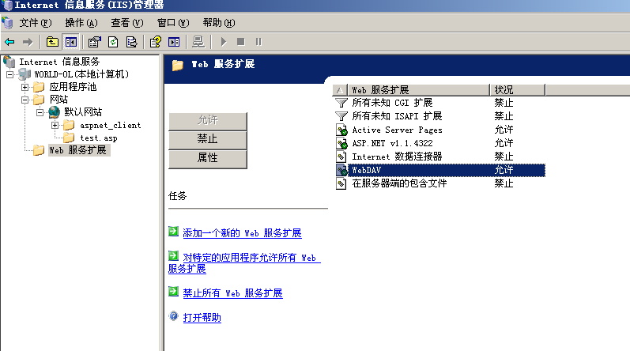
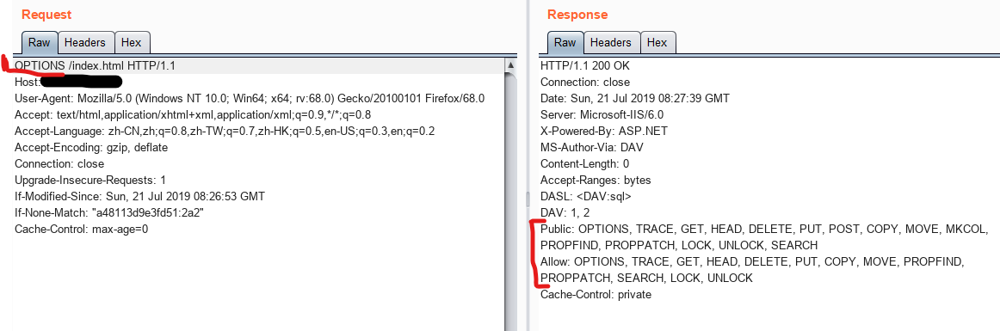
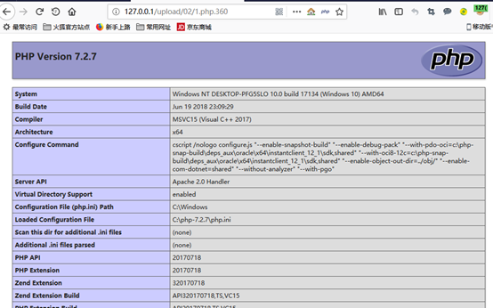

中间件漏洞总结报告
常见的web中间件漏洞总结 https://greyhat.top/a5d20e8f6c25c82b.html#more
1 IIS
IIS（互联网信息服务）是Internet Information Services的缩写，是由微软公司提供的基于运行Microsoft Windows的互联网基本服务。最初是Windows NT版本的可选包，随后内置在Windows 2000、Windows XP Professional和Windows Server 2003一起发行，但在Windows XP Home版本上并没有IIS。IIS是一种Web（网页）服务组件，其中包括Web服务器、FTP服务器、NNTP服务器和SMTP服务器，分别用于网页浏览、文件传输、新闻服务和邮件发送等方面，它使得在网络（包括互联网和局域网）上发布信息成了一件很容易的事。
IIS的安全脆弱性曾长时间被业内诟病，一旦IIS出现远程执行漏洞威胁将会非常严重。远程执行代码漏洞存在于 HTTP 协议堆栈 (HTTP.sys) 中，当 HTTP.sys 未正确分析经特殊设计的 HTTP 请求时会导致此漏洞。 成功利用此漏洞的攻击者可以在系统帐户的上下文中执行任意代码，可以导致IIS服务器所在机器蓝屏或读取其内存中的机密数据。
1.1 IIS6.0 短文件名猜解
成因
为了兼容16位MS-DOS程序，Windows为文件名较长的文件（和文件夹）生成了对应的windows 8.3 短文件名。 在Windows下查看对应的短文件名，可以使用命令dir /x。
只有前六位字符直接显示，后续字符用~1指代。其中数字1还可以递增，如果存在多个文件名类似的文件（名称前6位必须相同，且后缀名前3位必须相同）。后缀名最长只有3位，多余的被截断。
复现
创建
aaaaaaaaa.html文件猜解过程描述：
检查工具：https://github.com/lijiejie/IIS_shortname_Scanner
xhttp://x.x.x.x/A*~1****/a.aspx 404http://x.x.x.x/B*~1****/a.aspx 400http://x.x.x.x/AAAAAA~1****/a.aspx 404http://x.x.x.x/AAAAAA~1/a.aspx（判断是否是文件夹） 配置不可查看http://x.x.x.x/AAAAAAA~1*A**/a.aspx 400http://x.x.x.x/AAAAAAA~1*H**/a.aspx 404http://x.x.x.x/AAAAAA~1.HTM/a.aspx 404访问构造的某个存在的短文件名，会返回404。
访问构造的某个不存在的短文件名，返回400。
修复
- 升级
.net framework - 修改注册表：
HKEY_LOCAL_MACHINE\SYSTEM\CurrentControlSet\Control\FileSystem修改NtfsDisable8dot3NameCreation为1，重启，将web文件夹的内容拷贝到另一个位置，如c:\www到d:\w,然后删除原文件夹，再重命名d:\w到c:\www - CMD关闭NTFS 8.3文件格式的支持
局限
- 此漏洞只能确定前6个字符，如果后面的字符太长、包含特殊字符，很难猜解；
- 如果文件名本身太短（无短文件名）也是无法猜解的；
- 如果文件名前6位带空格，8.3格式的短文件名会补进，和真实文件名不匹配；
1.2 IIS6.0 PUT漏洞
成因
IIS Server 在 Web 服务扩展中开启了 WebDAV ，配置了可以写入的权限，造成任意文件上传。版本： IIS6.0
WebDAV是一种基于 HTTP 1.1协议的通信协议，它扩展了HTTP 1.1，在GET、POST、HEAD等几个HTTP标准方法以外添加了一些新的方法（PROPFIND、PROPPATCH、MKCOL、DELETE、PUT、COPY、MOVE、LOCK、UNLOCK等）。使应用程序可直接对Web Server直接读写，并支持写文件锁定(Locking)及解锁(Unlock)，还可以支持文件的版本控制。
IIS实现WebDAV是采用它的两种接口：CGI、ISAPI的ISAPI接口。
复现
- 前提：开启WebDAV 、写入权限、脚本资源访问
- 将GET请求改为OPTIONS，可以查看服务器信息。（启用了“WebDAV”扩展）

- 此时可以用PUT上传文件，但是不可以直接上传可执行脚本文件。（启用了“WebDAV”扩展，并且复选了“写入”）
- 使用
MOVE/COPY命令将其更名为脚本文件后缀。（启用了“WebDAV”扩展，并且复选了“脚本资源访问”`）

- 否则需要利用IIS的解析漏洞，使用
MOVE/COPY修改成1.asp;.txt

修复
- 关闭WebDAV 、写入权限、脚本资源访问
1.3 IIS6.0 解析漏洞
漏洞原因：IIS 6.0 在处理含有特殊符号的文件路径时会出现逻辑错误，从而造成文件解析漏洞。
xxxxxxxxxx/test.asp/test.jpgtest.asp;.jpg
漏洞利用：新建一个名为test.asp的目录，该目录下的任何文件都作为asp程序执行（特殊符号是/)；上传名为test.asp;.jpg的文件，虽然该文件真正的后缀名是.jpg,但由于含有特殊符号;，仍然会被IIS作为asp程序执行。
漏洞修复：做好权限设置,限制用户创建文件夹。可以通过自己编写正则,阻止上传xx.asp;.jpg等类型的文件名。使用waf。
1.4 IIS7.0/7.5 文件解析漏洞
iis7或7.5对文件名畸形解析导致远程代码执行 https://www.freebuf.com/column/198080.html
漏洞原因：URL 中文件后缀是.php，便无论该文件是否存在，都直接交给 php 处理，而 php 又默认开启 cgi.fix_pathinfo, 会对文件进行 “ 修理 ” ，可谓 “ 修理 ” ？举个例子，当 php 遇到路径 /aaa.xxx/bbb.yyy 时，若 /aaa.xxx/bbb.yyy 不存在，则会去掉最后的 bbb.yyy，然后判断/aaa.xxx 是否存在，若存在，则把 /aaa.xxx当作yyy格式的文件。
xxxxxxxxxxtest.jpg/.php
漏洞利用：若有文件 test.jpg ，访问时在其后加/.php，便可以把 “test.jpg/.php” 交给php ，php修理文件路径 “test.jpg/.php” 得到 ”test.jpg” ，该文件存在，便把该文件作为 php 程序执行了。
漏洞修复：
- 对新建目录文件名进行过滤，不允许新建包含‘.’的文件
- 曲线网站后台新建目录的功能，不允许新建目录
- 限制上传的脚本执行权限，不允许执行脚本
- 过滤
.asp/xm.jpg，通过ISApi组件过滤
2 Apache
Apache是世界使用排名第一的Web服务器软件。它可以运行在几乎所有广泛使用的计算机平台上，由于其跨平台和安全性被广泛使用，是最流行的Web服务器端软件之一。它快速、可靠并且可通过简单的API扩充，将Perl/Python等解释器编译到服务器中。
2.1 目录遍历
成因
- 由于配置错误导致的目录遍历
修复
- 修改apache配置文件
httpd.conf
- 找到
Options+Indexes+FollowSymLinks +ExecCGI并修改成Options-Indexes+FollowSymLinks +ExecCGI并保存
2.2 解析漏洞
成因
Apache文件解析漏洞与用户的配置有密切关系，严格来说属于用户配置问题。
Apache文件解析漏洞涉及到一个解析文件的特性：
Apache默认一个文件可以有多个以点分隔的后缀，当右边的后缀无法识别（不在mime.tyoes内），则继续向左识别，当我们请求这样一个文件：shell.xxx.yyy
复现
- 上传文件

修复
- 删除配置文件
AddHandler application/x-httpd-php .php
3 Nginx
Nginx (engine x) 是一个高性能的HTTP和反向代理web服务器，同时也提供了IMAP/POP3/SMTP服务。Nginx是由伊戈尔·赛索耶夫为俄罗斯访问量第二的Rambler.ru站点（俄文：Рамблер）开发的，第一个公开版本0.1.0发布于2004年10月4日。
其将源代码以类BSD许可证的形式发布，因它的稳定性、丰富的功能集、示例配置文件和低系统资源的消耗而闻名。2011年6月1日，Nginx 1.0.4发布。
Nginx是一款轻量级的Web 服务器/反向代理服务器及电子邮件（IMAP/POP3）代理服务器，在BSD-like 协议下发行。其特点是占有内存少，并发能力强，事实上Nginx的并发能力确实在同类型的网页服务器中表现较好，中国大陆使用Nginx网站用户有：百度、京东、新浪、网易、腾讯、淘宝等。
Nginx配置文件：/etc/nginx/conf.d/error1.conf
3.1 CRLF注入
成因
- CRLF是“回车+换行”（\r\n）的简称。
- HTTP Header与HTTP Body是用两个CRLF分割的，浏览器根据两个CRLF来取出HTTP内容并显示。通过控制HTTP消息头中的字符，注入一些恶意的换行，就能注入一些会话Cookie或者HTML代码。

复现
- 路径：
vulhub-master/nginx/insecure-configuration

会话固定
xxxxxxxxxx/%0aSet-cookie:JSPSESSID%3D1024

反射型XSS
xxxxxxxxxx/%0d%0a%0d%0a<img src=1 onerror=alert(/xss/)>

修复
- 使用不解码的URL跳转

- 任何可以设置HTTP头的场景都会出现CRLF注入问题
3.2 目录穿越
成因
Nginx反向代理，静态文件存储在/home/下，而访问时需要在url中输入files，配置文件中/files没有用/闭合，导致可以穿越至上层目录。
利用
xxxxxxxxxxhttp://x.x.x.x:8081/file../../../../../../../ 超过6个回到根目录
修复
3.3 解析漏洞
介绍
在用户访问http://127.0.0.1/favicon.ico/.php时，访问到的文件是favicon.ico，但却按照.php后缀解析了。
复现
- 路径：
vulhub/master/nginx_parsing_vulnerability
修复
- 在Nginx端使用
fastcgi_split_path_info将path info信息去除后，用tryfiles判断文件是否存在； - 借助PHP-FPM的
security.limit_extensions配置项，避免其他后缀文件被解析。 /etc/php5/fpm/pool.d/[www.conf](http://www.conf/)中security.limit_ectensions后面的值设为.php
4 Tomcat
Tomcat是一个免费的开放源代码的Web 应用服务器，属于轻量级应用服务器，在中小型系统和并发访问用户不是很多的场合下被普遍使用，是开发和调试JSP 程序的首选。
对于一个初学者来说，可以这样认为，当在一台机器上配置好Apache 服务器，可利用它响应 HTML （ 标准通用标记语言下的一个应用）页面的访问请求。实际上Tomcat是Apache 服务器的扩展，但运行时它是独立运行的，所以当运行tomcat 时，它实际上作为一个与Apache 独立的进程单独运行的。
4.1 远程代码执行
成因
Tomcat 运行在Windows 主机上，且启用了 HTTP PUT 请求方法，可通过构造的攻击请求向服务器上传包含任意代码的 JSP 文件，造成任意代码执行。
影响版本： Apache Tomcat 7.0.0 – 7.0.81
复现
- 配置漏洞，开启put方法可上传文件功能。tomcat文件夹下的
/conf/web.xml文件插入：
xxxxxxxxxx<init-param><param-name>readonly</param-name><param-value>false</param-value></init-param>
- 重启tomcat服务。
- 访问127.0.0.1：8080，burp抓包，send to Repeater，将请求方式改为PUT，创建一个122.jsp，并用%20转义空格字符。123.jsp内容为：
<%Runtime.getRuntime().exec(request.getParameter("cmd"));%>返回201，说明创建成功。

- 访问
127.0.0.1：8080/122.jsp?cmd=calc，弹出计算器
修复
- 检测当前版本是否在影响范围内，并禁用PUT方法。
- 更新并升级至最新版。
4.2 war后门文件部署
成因
Tomcat 支持在后台部署war文件，可以直接将webshell部署到web目录下。
若后台管理页面存在弱口令，则可以通过爆破获取密码。
修复
- 在系统上以低权限运行Tomcat应用程序。创建一个专门的 Tomcat服务用户，该用户只能拥有一组最小权限（例如不允许远程登录）。
- 增加对于本地和基于证书的身份验证，部署账户锁定机制（对于集中式认证，目录服务也要做相应配置）。在
CATALINA_HOME/conf/web.xml文件设置锁定机制和时间超时限制。 - 以及针对
manager-gui/manager-status/manager-script等目录页面设置最小权限访问限制。 - 后台管理避免弱口令。
5 WebLogic
WebLogic是美国Oracle公司出品的一个application server，确切的说是一个基于JAVAEE架构的中间件，WebLogic是用于开发、集成、部署和管理大型分布式Web应用、网络应用和数据库应用的Java应用服务器。将Java的动态功能和Java Enterprise标准的安全性引入大型网络应用的开发、集成、部署和管理之中。
5.1反序列化漏洞
成因
Java序列化，简而言之就是把java对象转化为字节序列的过程。而反序列话则是再把字节序列恢复为java对象的过程，然而就在这一转一变得过程中，程序员的过滤不严格，就可以导致恶意构造的代码的实现。
复现
- 路径：
vulhub-master/weblogic/CVE-2017-10271

- Kali启动监听。发送数据包成功后，拿到shell。
修复
- 升级Oracle 10月份补丁。
- 对访问
wls-wsat的资源进行访问控制。
5.2 SSRF
成因
WebLogic 中存在一个SSRF漏洞，利用该漏洞可以发送任意HTTP请求，进而攻击内网中redis、Fastcgi等脆弱组件。
复现
- 路径：
vulhub-master/weblogic/SSRF
修复
以修复的直接方法是将
SearchPublicRegistries.jsp直接删除就好了；删除
uddiexplorer文件夹限制
uddiexplorer应用只能内网访问WebLogic服务端请求伪造漏洞出现在
uddi组件（所以安装Weblogic时如果没有选择uddi组件那么就不会有该漏洞），更准确地说是uudi包实现包uddiexplorer.war下的SearchPublicRegistries.jsp。方法二采用的是改后辍的方式，修复步骤如下：将
weblogic安装目录下的wlserver_10.3/server/lib/uddiexplorer.war做好备份将
weblogic安装目录下的server/lib/uddiexplorer.war下载用
winrar等工具打开uddiexplorer.war将其下的
SearchPublicRegistries.jsp重命名为SearchPublicRegistries.jspx保存后上传回服务端替换原先的
uddiexplorer.war对于多台主机组成的集群，针对每台主机都要做这样的操作
由于每个server的
tmp目录下都有缓存所以修改后要彻底重启weblogic（即停应用–停server–停控制台–启控制台–启server–启应用）
6 其它
6.1 FastCGI未授权访问、任意命令执行
成因
Fastcgi其实是一个通信协议，和HTTP协议一样，都是进行数据交换的一个通道。
HTTP协议是浏览器和服务器中间件进行数据交换的协议，浏览器将HTTP头和HTTP体用某个规则组装成数据包，以TCP的方式发送到服务器中间件，服务器中间件按照规则将数据包解码，并按要求拿到用户需要的数据，再以HTTP协议的规则打包返回给服务器。
服务端使用fastcgi协议并对外网开放9000端口，可以构造fastcgi协议包内容，实现未授权访问服务端.php文件以及执行任意命令。
FPM其实是一个fastcgi协议解析器，Nginx等服务器中间件将用户请求按照fastcgi的规则打包好通过TCP传给谁？其实就是传给FPM。
FPM按照fastcgi的协议将TCP流解析成真正的数据。
6.2 PHPCGI远程代码执行
成因
在apache调用php解释器解释.php文件时，会将url参数传给php解释器。
如果在url后加传命令行开关（例如-s、-d 、-c或-dauto_prepend_file%3d/etc/passwd+-n）等参数时，会导致源代码泄露和任意代码执行。
此漏洞影响php-5.3.12以前的版本，mod方式、fpm方式不受影响。
复现
路径：
vulhub-master/php/CVE-2012-1823
- 环境启动后，访问
http://your-ip:8080/可见“Hello”字样。
- 访问
http://your-ip:8080/index.php?-s即爆出源码，说明漏洞存在。
修复
- 升级
php版本
感谢
FreeBuf：https://www.freebuf.com/articles/web/192063.html
IIS短文件名漏洞：https://www.cnblogs.com/peterpan0707007/p/8529918.html
IIS-WebDAV：https://www.cnblogs.com/str0ng/articles/3200946.html
https://www.cnblogs.com/tdcqma/p/6125789.html
CRLF注入：https://www.leavesongs.com/PENETRATION/bottle-crlf-cve-2016-9964.html
https://www.leavesongs.com/PENETRATION/Sina-CRLF-Injection.html
FastCGI：https://www.leavesongs.com/PENETRATION/fastcgi-and-php-fpm.html
PHPCGI：https://www.leavesongs.com/PENETRATION/php-cgi-cve-2012-1823.html
测试平台：https://vulhub.org/
仅交流学习，侵删